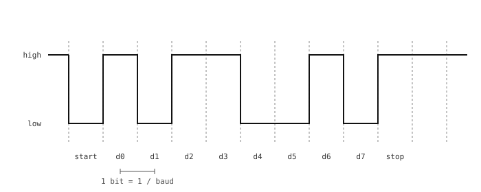

3.18. UART alapok¶
A UART (Universal Asynchronous Receiver-Transmitter) a legrégebbi és legegyszerűbb módja annak, hogy bájtokat mozgassunk két mikrokontroller között, vagy egy mikrokontroller és egy gazda PC között. Az adatot két vezeték viszi – egy-egy mindkét irányhoz –, a közös föld pedig visszavezeti a jelet. Egyik oldal sem futtat közös órajelet; előre megegyeznek egy átviteli sebességben (baud), és a bit-időzítést maga az adatvonal alapján állítják helyre.
3.18.1. A keret¶
A vezetéken minden karakter egy keretbe van csomagolva: egy start bit, az adatbitek, egy opcionális paritásbit, valamint egy vagy két stop bit.

Egy UART-keret: egy start bit, nyolc adatbit és egy stop bit, mindegyik egy bitidőszak (1 / baudrate másodperc) széles.¶
A vonal üresjáratban magas szinten áll. A vevő egy leeső élre figyel, amely egy új keret kezdetét jelzi. Ezután bitidőszakonként egyszer mintát vesz az adatvonalról – jellemzően minden bit közepén –, és a bitekből újra összerakja a karaktert. A stop bit visszaállítja a vonalat üresjáratba, hogy a következő start bit észlelhető legyen.
3.18.2. Az átviteli sebesség (baud)¶
A bitidőszakot – és így a kapcsolat sebességét – az átviteli sebesség (baud) határozza meg, vagyis a másodpercenkénti bitek száma. A 9600, 19200, 38400, 57600, 115200, 230400, 460800 és 921600 a szabványos értékek; a 115200 a leggyakoribb alapérték. Mindkét végnek néhány százalékon belül egyeznie kell az átviteli sebességben, különben a vevő rossz pontokon veszi a bitek mintáit, és az adat zagyvaságként érkezik vissza.
A magasabb átviteli sebességek másodpercenként több adatot mozgatnak, de érzékenyebbek a kábelhosszra, a kapacitásra és a két vég órajeleinek pontosságára. Ugyanazon a munkapadon lévő két panel közötti rövid kapcsolatoknál a 115200 és 921600 közötti tartomány kényelmesen működik.
3.18.3. Bekötés¶
Egy UART-kapcsolat három vezetéket használ:

UART-bekötés: az egyik panel TX-e a másik RX-éhez megy, és mindkét föld össze van kötve.¶
TX → RX, mindkét irányban. Minden panel adólába a másik panel vevőlába. Gyakori kezdő hiba a TX → TX bekötés – két kimenet küzd egymással, és egyik vevőre sem jut adat.
Közös föld. A jelszintek a földhöz vannak viszonyítva, így a két panelnek közös földdel kell rendelkeznie, különben a vevő rossz feszültséget lát a vonalon.
3.18.4. Feszültségszintek és fizikai rétegek¶
A kamera UART-lábain a jelszintek 3,3 V CMOS szintűek: föld a logikai nullához, 3,3 V a logikai egyhez. Bármi, ami 3,3 V CMOS UART-ot beszél – egy másik mikrokontroller, egy 3,3 V-ra állított USB-soros átalakító, egy 3,3 V-os GPS-modul –, közvetlenül beköthető.
Megjegyzés
Az 5 V CMOS UART-eszközök (régebbi mikrokontrollerek, bizonyos GPS-modulok, néhány régebbi érzékelő-bővítő) ugyanazt a UART-keretezést beszélik, de 5 V-os logikai szinteken. Ezek közvetlen bekötése a kamerához nem biztonságos: egy 5 V-os TX, amely a kamera RX-ét hajtja, túllépi az abszolút maximális bemeneti feszültséget azokon a kamerákon, amelyek nem 5 V-toleránsak, a kamera 3,3 V-os TX-e pedig esetleg nem éri el az 5 V-os eszköz magas küszöbét egy tiszta logikai egyhez.
A két feszültség közötti átalakításhoz egy aktív vonalmeghajtó szükséges – egy dedikált, kétirányú szintillesztő IC, amelynek minden vonal mindkét oldalán saját meghajtó-tranzisztorai vannak. A Szintillesztés fejezetben szereplő passzív, MOSFET-és-felhúzós szintillesztők itt nem elegendők: a felfutó éleik a vonal ellenálláson keresztüli töltésére támaszkodnak, ami kapcsolási sebességeknél rendben van, de UART-hoz messze túl lassú. 115200 baudon minden bit körülbelül 8 µs-ig tart, és a passzív szintillesztő RC-meredeksége az egyik bitet a következőbe keni.
Egy aktív vonalmeghajtó teljes UART-sebességeken is tiszta éleket állít elő mindkét irányban. Válassz a kapcsolat futtatási átviteli sebességére méretezett alkatrészt, kösd a kamera TX és RX lábát a szintillesztő 3,3 V-os oldalára, az 5 V-os eszköz TX és RX lábát pedig a szintillesztő 5 V-os oldalára.
Három régebbi fizikai réteg ugyanazt a keretezést használja, de eltérő feszültségekkel, és szintátalakítóra van szükségük közöttük és egy 3,3 V-os mikrokontroller között:
RS-232. Az asztali PC-k és néhány ipari berendezés soros portjai használják. A vonal nagyjából
±5 Vés±15 Vközött leng, üresjáratban a negatív szinten. A CMOS-hoz képest fordított polaritás és magas feszültség; a MAX232 / MAX3232 család egy chipje (vagy hasonló) kezeli az átalakítást.RS-422. Pont-pont kapcsolatokra szánt differenciális jeltovábbítási szabvány (egy meghajtó, akár tíz vevő). A meghajtó egy szimmetrikus vezetékpáron küld; a vevő a kettő közötti különbséget látja, és figyelmen kívül hagyja az út menti közös módusú zajt. A teljes duplex kapcsolatok két párt használnak – egyet-egyet mindkét irányhoz. Az RS-422 az átviteli sebességtől függően tíz métertől egy kilométerig terjedhet, és egy RS-422 jeladó-vevő chip ül a kamera TX / RX lába és a szimmetrikus pár között.
RS-485. Az RS-422 többpontos rokona – ugyanaz a differenciális jeltovábbítás, de úgy tervezve, hogy akár 32 meghajtót és vevőt is elhelyezzen egy buszon. A legtöbb kapcsolat félduplex egyetlen páron, ahol minden csomópont meghajtója és vevője ugyanazokat a vezetékeket osztja meg, és a szoftver dönti el, ki beszél. Ipari automatizálási buszokban (Modbus, DMX512, Profibus) használják, ahol a vezetékek messzire futnak és a zaj rossz; egy RS-485 jeladó-vevő chip ül a kamera TX / RX lába és a differenciális pár között.
Mindkettő továbbra is UART-kereteket küld az alapszintű bit-szinten. A kamera machine.UART konfigurációja (átviteli sebesség, bitek, paritás, stop bitek) ugyanaz, függetlenül attól, hogy a jeladó-vevő túloldalán melyik fizikai réteg viszi a jelet.